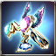
Crescemento Elemental Bracelet
Available to equip above Lv. 1 - Warlock
Bracelet of Special that is decided the A.R. and ATK Power according to the players level.
Max 6 enhancement possible.
Attributes
Rating: 0

Available to equip above Lv. 1 - Warlock
Bracelet of Special that is decided the A.R. and ATK Power according to the players level.
Max 6 enhancement possible.
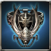
Lv.1 - Warlock
Trial Special Bracelet made as a tester to develop the powerful weapon. Cant be used continuously, as its durability wasnt considered while making.[ATK to All types+120%, Attack SPD+20%]
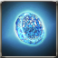
Available to equip above Lv. 1 - Warlock
* Register cancel - Double Click
Lv.1 - Warlock
Previous
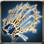
Available to equip above Lv. 1 - Warlock
Blacksmith, Bryan made it by refining Blue Armonium with her special skill.{br}[ATK +100% to Lifeless, Wildlife, Daemon, Undead and Human types]
Lv.1 - Warlock
Trial Special Bracelet made as a tester to develop a better quality weapon. It can not be used continuously since its durability was not considered while making. [All Types of ATK +100%, ATK SPD +20%]
Lv.1 - Warlock
Trial Special Bracelet made as a tester to develop a better quality weapon. It can not be used continuously since its durability was not considered while making. [All Types of ATK +100%, ATK SPD +20%]
Available to equip above Lv. 1 - Warlock
A Vespanolas refined special bracelet for pioneers. It cannot be used continuously since its durability wasnt considered. [ATK toward all types +100%, ATK SPD +20%]
Available to equip above Lv. 72 - Warlock
A mysterious bracelet that enhances the powers of all three elemental stances, Fire, Ice, and Lightning, at the same time. The unique stance of The Elemental Lord can be used when this bracelet is equipped.
Available to equip above Lv. 76 - Warlock
A mysterious bracelet that enhances the powers of all three elemental stances, Fire, Ice, and Lightning, at the same time. The unique stance of The Elemental Lord can be used when this bracelet is equipped.
Available to equip above Lv. 80 - Warlock
A mysterious bracelet that enhances the powers of all three elemental stances, Fire, Ice, and Lightning, at the same time. The unique stance of The Elemental Lord can be used when this bracelet is equipped.
Available to equip above Lv. 84 - Warlock
A mysterious bracelet that enhances the powers of all three elemental stances, Fire, Ice, and Lightning, at the same time. The unique stance of The Elemental Lord can be used when this bracelet is equipped.
Available to equip above Lv. 84 - Warlock
A special bracelet made for pioneers convenient usage. Feels a mysterious power from it.
Available to equip above Lv. 100 - Warlock
A bracelet that shows the powers of Pluto, Neptune and Uranus, Kings of Fire, Ice and Lightning.
Lv.100 - Warlock /Exclusively for above Expert
A bracelet that belongs to the Raien family who prospered in the past. It can inflict [Power Magic]. [ATK to all species +10%, ATK SPD +15%, Max SP +25%] , All Magic Penetration +3]
 Magic Weapon Crystal - Lv 35 x2 Magic Weapon Crystal - Lv 35 x2 |
 Star Stone x50 Star Stone x50 |
 kryptonite x200 kryptonite x200 |
 Enchantchip Veteran x100 Enchantchip Veteran x100 |
 Elemental Jewel x10 Elemental Jewel x10 |
 Fool Stone x1 Fool Stone x1 |
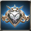
Lv.100 - Warock/ Exclusively for Master
A special bracelet that was honored to an overlord who had absolute power and great riches. It has a beautiful shape and great performance but also has grudges of people that were sacrificed by the overlord. [5% chance to inflict [Power Magic], Immunity -10, Penetration +5]
| Magic Weapon Crystal - Lv 35 x2 |
| Star Stone x100 |
 Symbol of Naraka x100 Symbol of Naraka x100 |
 Enchantchip Expert x50 Enchantchip Expert x50 |
| Elemental Jewel x20 |
| Fool Stone x1 |
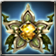
Lv.100 - Warlock / Master exclusive
A special bracelet filled with the mystery of life that has been made from the blood of the Vigilar tribe. This bracelet has the immortal strength which greedily drains peoples lives and maintains its beautiful look forever.
| Magic Weapon Crystal - Lv 36 x2 |
| Elemental Jewel x50 |
 Forest Spirit x30 Forest Spirit x30 |
 liquid of Heaven x3 liquid of Heaven x3 |
 Drop of Sky x10 Drop of Sky x10 |
| Fool Stone x1 |
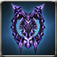
Lv.100 - Warlock / Master exclusive
A Ice Bangle that was crafted by Armonium which maintained holy power in spite of erosion of Abyss. It maintains the weapon shape by the holy power, but the beautiful shape has been encroached and ominous. [Penetration+15, Immunity-5]
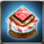
Only Veteran + can equip - Warlock
[Unique] Someone made it as a weapon, but it is only part of the real power that was used to predict destiny. [A.R. +1]
 Green Ticket of Arsene Circus x1 Green Ticket of Arsene Circus x1 |
| Enchantchip Lv 96 x20 |
| Fool Stone x1 |
| Fool Stone x1 |
Only Veteran + can equip - Warlock
Someone made it as a weapon, but it is only part of the real power that was used to predict destiny. [Additional ATK of Fire/Ice/Lightning +10]
| Green Ticket of Arsene Circus x1 |
 Archangel heart x1 Archangel heart x1 |
 Seed of Yggdrasil x1 Seed of Yggdrasil x1 |
 Seirens scale x1 Seirens scale x1 |
| Fool Stone x1 |
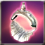
Only Veteran + can equip - Warlock
Glamorous white bracelet embossed with the insignia of the Bishop. The power of three elemental forms is combined in this bracelet. [+20 additional Fire/Ice/Lightning ATK]
 Dragon Heart x1 Dragon Heart x1 |
 Mana stone x100 Mana stone x100 |
 Mega Aidanium x100 Mega Aidanium x100 |
 Mega Etretanium x100 Mega Etretanium x100 |
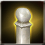 Old chess x30 |
| Fool Stone x1 |
Only Veteran + can equip - Warlock
Black Bracelet embossed with the insignia of the Bishop. The power of all three elemental forms is compacted in this bracelet. [+60 Mental Additional ATK]
| Dragon Heart x1 |
| Mana stone x100 |
| Mega Etretanium x100 |
| Mega Ionium x100 |
| Old chess x30 |
| Fool Stone x1 |

Only Veteran + can equip - Warlock
Shiny silver bracelet crafted from the bones of the Dead. [+10 additional Fire/Ice/Lightning ATK]
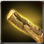 Juniper x50 |
| Mana stone x50 |
 Pure Quartz x300 Pure Quartz x300 |
| Pure Etretanium x300 |
| Enchantchip Lv 92 x3 |
| Fool Stone x1 |
Only Veteran + can equip - Warlock
A bracelet which has elements of all attributes combined in
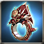
Only Veteran + can equip - Warlock
A special bracelet that is carved with the decoration of a strong powerful dragon. It can deliver a strong attribute ATK. [Fire/Ice/Lightning/Mental Attributes +20]
| Magic Weapon Crystal - Lv 32 x2 |
 Moon Stone x3 Moon Stone x3 |
 a lump of Platinum x1 a lump of Platinum x1 |
| Dragon Heart x1 |
| Fool Stone x1 |
| Fool Stone x1 |
Only Veteran + can equip - Warlock
A noble golden bracelet that is made with Chess [Bishop] decoration. It allows you to use all 3 attributes of magic. [Mental Attribute +30, Max SP +25%]

Available to equip above Expert Level - Warlock
The star of Delphinus. Brimming with unfathomable power.. [+10 Fire/Ice/Lightning additional ATK]
| Enchantchip Veteran x3 |
| Magic Weapon Crystal - Lv 30 x1 |
 Ancient Rune - Ti x50 Ancient Rune - Ti x50 |
| Ancient Rune - Ar x50 |
| liquid of Heaven x10 |
| Fool Stone x1 |
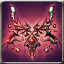
Available to equip above Expert Level - Warlock
A bracelet that Dr.Torsche made based on the founded weapons in the Lucifer Castle. It can inflict [PowerMagic].
| Magic Weapon Crystal - Lv 35 x2 |
| Star Stone x10 |
 Wheel of Time x100 Wheel of Time x100 |
| Enchantchip Veteran x50 |
| Elemental Jewel x5 |
| Fool Stone x1 |
Available to equip above Expert Level - Warlock
The star of Delphinus. Brimming with unfathomable power.. [+10 Fire/Ice/Lightning additional ATK]
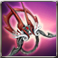
Available to equip above Expert Level - Warlock
Bracelet of Magic [+60 Mental Additional ATK]
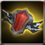 Piece of Defrodain x1 |
| Dragon Heart x2 |
| Mana stone x500 |
| liquid of Heaven x50 |
 Symbol of Darkness x5 Symbol of Darkness x5 |
| Fool Stone x1 |
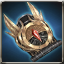
Available to equip above Expert Level - Warlock
A special bracelet used by Bristia soldiers. It shows its thousand different efficiencies depending on the custody condition. [Additional ATK of Fire/Ice/Lightning +10]
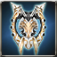
Available to equip above Expert Level - Warlock
A special bracelet that was crafted by Armonium which maintained holy power in spite of erosion of Abyss.
| Enchantchip Veteran x100 |
| Magic Weapon Crystal - Lv 34 x1 |
 Armonias Holywater x10 Armonias Holywater x10 |
| Fool Stone x1 |
| Fool Stone x1 |
Available to equip above Expert Level - Warlock
The star of Delphinus. Brimming with unfathomable power.. [+10 Fire/Ice/Lightning additional ATK]
| Enchantchip Veteran x50 |
| Magic Weapon Crystal - Lv 33 x1 |
| Ancient Rune - Ti x50 |
| Ancient Rune - Ar x50 |
| Fool Stone x1 |
| Fool Stone x1 |
Available to equip above Expert Level - Warlock
The star of Delphinus. Brimming with unfathomable power. [+10 Fire/Ice/Lightning additional ATK]{br}[All types of ATK +100%]{br}It will be deleted, when the event ends.
Available to equip above Expert Level - Warlock
A bracelet that Dr.Torsche made based on the founded weapons in the Lucifer Castle. It can inflict [PowerMagic].{br}[All types of ATK +100%]
Available to equip above Expert Level - Warlock
The star of Delphinus. Brimming with unfathomable power.. [+10 Fire/Ice/Lightning additional ATK]
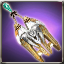
Available to equip above Expert Level - Warlock
A Bracelet that is specially designed to fight against Demon [Max SP +25%]
| Magic Weapon Crystal - Lv 33 x2 |
| Moon Stone x5 |
| a lump of Platinum x3 |
| Dragon Heart x1 |
| Fool Stone x1 |
| Fool Stone x1 |
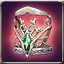
Available to equip above Expert Level - Warlock
A bracelet studded with emerald. [Mental Attribute +60]
| Magic Weapon Crystal - Lv 33 x2 |
| Moon Stone x5 |
| a lump of Platinum x3 |
| Dragon Heart x1 |
| Fool Stone x1 |
| Fool Stone x1 |
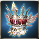
Available to equip above Expert Level - Warlock
A weapon designed with forturn-telling cards used in the Old Continent. Bracelet with will of Empress . [Max SP+15%,Abyss Flare Lv.+1]
| Magic Weapon Crystal - Lv 33 x2 |
| Moon Stone x5 |
| a lump of Platinum x3 |
| Dragon Heart x1 |
| Fool Stone x1 |
| Fool Stone x1 |
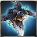
Available to equip above Expert Level - Warlock
A weapon made out of Fallen Angels Curse. It provides strong power and disaster to the wielder. A cursed bracelet that wants the life of other people. [Basic ATK +5%, Penetration +8]
| Magic Weapon Crystal - Lv 33 x2 |
| Moon Stone x5 |
| a lump of Platinum x3 |
| Dragon Heart x1 |
| Fool Stone x1 |
| Fool Stone x1 |
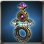
Available to equip above Expert Level - Warlock
It was found in the dungeons of Viron Clocktower. It has blessing of Deus ex Machina, god of machines, and it is so powerful that it could not have been made by a human. [+10% ATK to Wildlife, Lifeless, Daemon, Undead, Human enemy, Penetration +10, Max SP +10%, ATK Speed +10%]
| Magic Weapon Crystal - Lv 33 x2 |
| Moon Stone x5 |
| a lump of Platinum x3 |
| Dragon Heart x1 |
| Fool Stone x1 |
| Fool Stone x1 |
Available to equip above Expert Level - Warlock
Special Bracelet that belongs to a prospering family in the past. At that time, giving weapons to the nation was one way to be approved of the familys legitimacy officially. [Additional ATK of Fire/Ice/Lightning +10, Penetration +3]
| Enchantchip Veteran x100 |
| Magic Weapon Crystal - Lv 33 x1 |
 Shiny Crystal x200 Shiny Crystal x200 |
| Fool Stone x1 |
| Fool Stone x1 |
Available to equip above Master - Warlock
A bracelet made from the power in Body of Nephthys which was made by Montoro with the knowledge he obtained from the Ancient Civilization. Can inflict [PowerMagic].
| Symbol of Naraka x100 |
| Magic Weapon Crystal - Lv 35 x1 |
 Pattern of Nephthys x50 Pattern of Nephthys x50 |
 Devils Dream x100 Devils Dream x100 |
| liquid of Heaven x3 |
| Fool Stone x1 |
Available to equip above Master - Warlock
A Bristia Weapon, which is newly made by the artisan spirit of Victor. It shows a strong performance.
Available to equip above Master - Warlock
A Bristia Weapon, which is newly made by the artisan spirit of Victor. It shows a strong performance.
 Pure Essence x1000 Pure Essence x1000 |
 Fallen Essence x1000 Fallen Essence x1000 |
 Balance Essence x1000 Balance Essence x1000 |
 Warped weapon debris x1500 Warped weapon debris x1500 |
| Magic Weapon Crystal - Lv 36 x1 |
| Fool Stone x1 |
Available to equip above High Master - Warlock
Blacksmith Bryan made this by refining Blue Armonium with her special skill. It can be blessed by Baruch, the Priest of the Armonia Cathedral.
| Magic Weapon Crystal - Lv 36 x1 |
 Symbol of HolyKnight x100 Symbol of HolyKnight x100 |
 Symbol of DarkPriest x100 Symbol of DarkPriest x100 |
 Armonium Ore - Blue x20 Armonium Ore - Blue x20 |
 Armonia Token x200 Armonia Token x200 |
| Armonias Holywater x150 |
| liquid of Heaven x5 |
Available to equip above Master - Warlock
The star of Dolphinus. the unfathomable power inherited and embodied. Recreated by Valeron and showing amazing power. [+20 of Fire/Ice/Lightning additional ATK, +5 of Fire/Ice/Lightning/Mental Penetration]
| Magic Weapon Crystal - Lv 35 x1 |
| Symbol of Dark Shodow, D x200 |
 Symbol of Evora x200 Symbol of Evora x200 |
| The Rune of Talos, Shiny Corazon x50 |
| liquid of Heaven x3 |
| Fool Stone x1 |
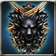
Available to equip above High Master - Warlock
It was restored through the legendary Blacksmith Ignacio Valerons Weapon Manufacture Book. Though its performance is less than half of the original, it displays unequaled ability. [Valerons Protection] can be added by Violet Valeron.
| Magic Weapon Crystal - Lv 37 x1 |
| Silver Insignia of Patrikyon x100 |
| Golden Insignia of Magic Corps x100 |
| Symbol of Evora x50 |
| Warped weapon debris x500 |
 Shiny Sollarion x300 Shiny Sollarion x300 |
| liquid of Heaven x5 |
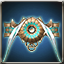
Available to equip above High Master - Warlock
Special Bracelet containing Mind Master Stellas power
[PEN+10, Extra Damage to All Tribes+25%]
| Magic Weapon Crystal - Lv 38 x1 |
| Armonium Ore - Red x500 |
| Armonium Ore - Red x500 |
 TimePiece : Rose x500 TimePiece : Rose x500 |
| TimePiece : Rose x900 |
 Vertrauen Symbol x1 Vertrauen Symbol x1 |
 Star Essence x50 Star Essence x50 |
Available to equip above High Master - Warlock
Special Bracelet containing Mind Master Stellas power
[PEN+10, Extra Damage to All Tribes+25%]
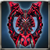
Available to equip above High Master - Warlock
The weapon made to fight against Abyss Army by processing Earth-color Armonium containing Abyss Essence. It can retain the shape as a weapon thanks to the holy power, but its shape looks ominous owing to Abyss Essences power.{br}[Extra damage to Demon type enemy+25%]
| Magic Weapon Crystal - Lv 38 x1 |
| liquid of Heaven x10 |
 Armonium Ore - Black x10000 Armonium Ore - Black x10000 |
| Fool Stone x1 |
| Fool Stone x1 |
Available to equip above High Master - Warlock
The weapon made to fight against Abyss Army by processing Earth-color Armonium containing Abyss Essence. It can retain the shape as a weapon thanks to the holy power, but its shape looks ominous owing to Abyss Essences power.{br}[Extra damage to Demon type enemy+25%]
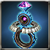
Available to equip above High Master - Warlock
Mysterious Treasure Chest
Available to equip above High Master - Warlock
Mysterious Treasure Chest
Available to equip above Master - Warlock
A bracelet made from the power in Body of Nephthys which was made by Montoro with the knowledge he obtained from the Ancient Civilization. Can inflict [PowerMagic].
| Symbol of Naraka x100 |
| Magic Weapon Crystal - Lv 35 x1 |
| Pattern of Nephthys x50 |
| Devils Dream x100 |
| liquid of Heaven x3 |
| Fool Stone x1 |
Available to equip above High Master - Warlock
Blacksmith Bryan made this by refining Blue Armonium with her special skill. It can be blessed by Baruch, the Priest of the Armonia Cathedral.
Available to equip above Master - Warlock
The star of Dolphinus. the unfathomable power inherited and embodied. Recreated by Valeron and showing amazing power. [+20 of Fire/Ice/Lightning additional ATK, +5 of Fire/Ice/Lightning/Mental Penetration]
Available to equip above High Master - Warlock
It was restored through the legendary Blacksmith Ignacio Valerons Weapon Manufacture Book. Though its performance is less than half of the original, it displays unequaled ability. [Valerons Protection] can be added by Violet Valeron.
Available to equip above Master - Warlock
A bracelet made from the power in Body of Nephthys which was made by Montoro with the knowledge he obtained from the Ancient Civilization. Can inflict [PowerMagic].{br}[All types of ATK +100%]
Available to equip above High Master - Warlock
Blacksmith, Bryan made it by refining Blue Armonium with her special skill. {br}[All types of ATK +100%]
Available to equip above High Master - Warlock
Old weapon Violet Valeron restored in the past. Its performance is lower than the original version.{br}[ATK to all types+100%]
Available to equip above High Master - Warlock
Register Memo
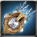
Available to equip above Master - Warlock
This is the best bracelet which consolidates the technique of the new continent. It has beauty and strength.
| Magic Weapon Crystal - Lv 35 x2 |
| Star Stone x30 |
| kryptonite x200 |
| Enchantchip Veteran x100 |
| Elemental Jewel x10 |
| Fool Stone x1 |
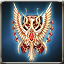
Available to equip above High Master - Warlock
The weapon of luxirious decoration drank lots of bloods and dyed red by oneself. The weapon that contained grudge seems to want the owners bloods as well. It gives a heavy cross. [Damage to all tribes +80%, Penetration +10, Accuracy -20, ATK Speed -20%]
| Enchantchip Master x10000 |
| Vertrauen Symbol x10 |
| Melee Weapon Crystal - Lv 38 x10 |
| Star Essence x300 |
| Armonium Ore - Black x5000 |
| Fool Stone x1 |
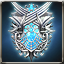
Available to equip above High Master - Warlock
Special weapon Royal Family awards only to those who achieved high achievements in Illier. The beautiful white silver weapon made by the master craftsman fascinates its owner with everlasting brilliance.
Available to equip above Master - Warlock
A bracelet made from the power in Body of Nephthys which was made by Montoro with the knowledge he obtained from the Ancient Civilization. Can inflict [PowerMagic].